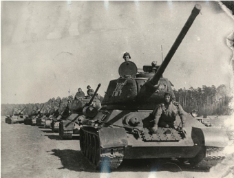

ДМЗ ИМ. ПЕТРОВСКОГО
8 августа 1941 года
завод остановился, началась эвакуация24 августа 1941 года
взорваны мартеновские печи и другие агрегаты25 августа 1941 года
город оккупирован
По приказу вражеского командования завод был заминирован и 25 октября превратился в руины. Подпольной организации удалось разминировать ТЭЦ, обеспечивавшую светом и водой жителей города.
В октябре 1943 года
советские войска освободили Днепропетровск
Подпольная организация
ДМЗ им. Петровского:
- Юрий Савченко — организатор,
бывший работник железнодорожного цеха - Василий Кириленко
- Михаил Котляр
- Виктор Тарнопольский
- Сергей Морщавка
Эвакуация завода
Оборудование эвакуировалось на Чусовской, Гуръевский, Орско-Халиловский, Кузнецкий и Магнитогорский металлургические комбинаты
18 083 жителя Днепропетровска погибли на фронтах Великой Отечественной войны
17 263 человека пропали без вести
РУДНИК СУХА БАЛКА
Восстановление разрушенной галереи рудника Суха Балка
С августа 1941 года добыча руды не велась. Оборудование было частично демонтировано и взорвано, шахты затоплены.
В феврале 1944 года Криворожский бассейн был освобождён от гитлеровских войск. На шахте начались восстановительные работы.
ВЕЛИКОЙ ПОБЕДЕ!
НТМК
в военные годы активно строится
31 октября 1941 года — наступление гитлеровских войск на Тулу (операция «Тайфун»). 43 дня тульские рабочие и милиция держали оборону и отбили врага
КМК
>100 промышленных объектов введены в строй за первые три года войны
•••
~ 100 тыс. эвакуированных граждан принял город
Строительство торгового порта прервано.
•••
~1500 находкинцев призваны на фронт, более половины не вернулись
НовоТАГИЛЬСКИЙ МЕТАЛЛУРГИЧЕСКИЙ ЗАВОД
Производство
НТМК, основанный 25 июня 1940 года
в военные годы активно строится:
в военные годы активно строится:
1941–1943 гг. — введены в эксплуатацию мартеновские печи № 3, 4, 5, 6

Мартеновский цех № 2, 1943 год

В 1944 году запущена
доменная печь № 3
производительностью
400 тыс. тонн чугуна в год
доменная печь № 3
производительностью
400 тыс. тонн чугуна в год
Торжественный митинг, посвященный пуску домны № 3, 1944 год
За годы войны металлурги НТМК дали стране,
млн тонн:
млн тонн:
Чугуна: 4,2
Стали: 0,9
Проката: 0,5
Продукция для нужд фронта
1/3
всей брони
для танков
производилась
на НТМК
всей брони
для танков
производилась
на НТМК
25 танков «Т-34»
производства Уралвагонзавода впервые отправляются на фронт уже 20 декабря 1941 года, броневая сталь для них выплавлена и прокатана на НТМК
производства Уралвагонзавода впервые отправляются на фронт уже 20 декабря 1941 года, броневая сталь для них выплавлена и прокатана на НТМК
В конце 1941 года бандажный стан стал производить поворотные круги для танковых башен
В сентябре 1941 года начал работу стан «3000», который производил броневой лист для танков
Толстолистовой броневой стан, 1941 год

Группа работников ново-механического цеха НТМК с продукцией военного времени

30 тысяч
реактивных снарядов для «Катюш»
было произведено
за 4 года
на НТМК
реактивных снарядов для «Катюш»
было произведено
за 4 года
на НТМК
В августе 1942 года на коксохимпроизводстве была смонтирована установка для получения легких пиридиновых оснований – сырья для производства сульфидина, сильнодействующего медикамента, спасшего в годы войны жизни многих людей
Производство
На курсах по подготовке кадров женщины осваивали мужские профессии — шоферов, помощников машинистов, электриков
Ирина Николаева,
Нина Шмакова,
Евфросинья Шуйских стали подручными сталевара. Фелисата Шарунова встала к горну доменной печи
Нина Шмакова,
Евфросинья Шуйских стали подручными сталевара. Фелисата Шарунова встала к горну доменной печи
68 фронтовых комсомольско-молодежных бригад работало на заводе в 1943 году
Рабочие трудились по 12-14 часов в сутки, часто не уходили домой, отдыхали на рабочих местах
Фронт
По инициативе тагильских металлургов в начале 1943 года создан Уральский добровольческий танковый корпус

В корпус было отобрано 9660 человек из 115 тысяч подавших заявление
Комсомольский актив Уральского Добровольческого Танкового Корпуса, 1943 год
Корпус был оснащён оружием и техникой, которые трудящиеся изготовили сверх плана и на средства, полученные от добровольных взносов
Металлурги Нижнего Тагила принимали активное участие в формировании танковых колонн «Новотагильский металлург», «Металлург Урала», собирали деньги на самолет «Новотагильский металлург»
3 000
металлургов НТМК
ушли на фронт
ушли на фронт
~100
из них участвовали в штурме Берлина
Блок 3